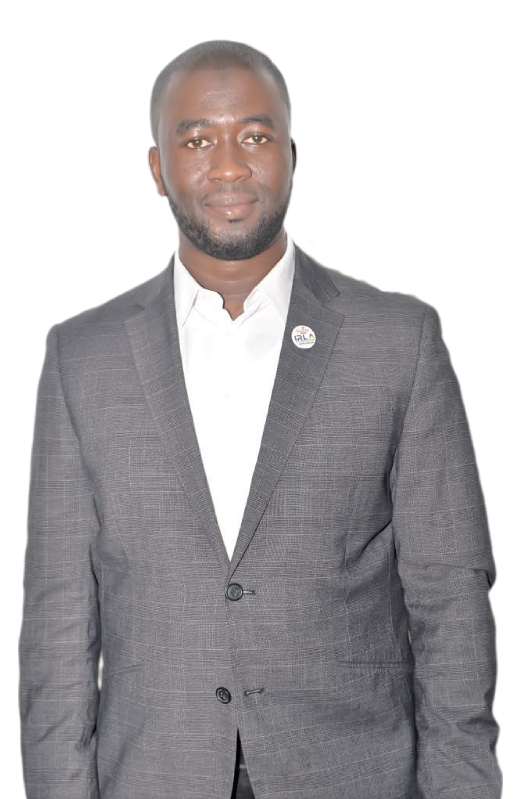

Dr Mohamed Bintou KEITA
Directeur Général de L’IRLA
SCANNEZ POUR ÉCRIRE AU DIRECTEUR

CHANTIERS DE LA TRANSITION
LA REFONDATION DE L’ETAT
Prôner un fonctionnement dépersonnalisé et dépolitisé des institutions.
L’APAISEMENT SOCIOPOLITIQUE
Apaiser les esprits et détendre une atmosphère sociopolitique naguère crispée.
LA LUTTE CONTRE LES PRÉVARICATIONS
Le combat contre la corruption, les détournements de deniers publics.
LES REFORMES INSTITUTIONNELLES
Les établissements publics disposent d’un conseil d’administration.
MOT DU DIRECTEUR GÉNÉRAL
Chers internautes,
Je suis heureux de vous souhaiter la bienvenue sur notre site au nom de l’ensemble du personnel de l’IRLA. Notre institut est chargé de la mise en œuvre de la politique du gouvernement guinéen en matière de promotion des langues nationales en vue d’en faire des moyens de communication et d’enseignement. En visitant notre site, vous trouverez la richesse de notre patrimoine culturel véhiculée dans nos langues. Société d’oralité, la Guinée regorge de contes, légendes, proverbes, devinettes et maximes qui portent des enseignements philosophiques et éthiques indispensables à la constitution harmonieuse de notre personnalité. Mes équipes et moi sommes convaincus que nos langues nationales sont des outils efficaces de trans- mission des savoirs et connaissances pour un développement durable et bénéfique pour les populations.
En vous disant merci, nous vous souhaitons une excellente navigation sur notre site.
L’IMPORTANCE D’UNE POLITIQUE LINGUISTIQUE DE LA GUINÉE
La politique linguistique est connue comme étant toute décision d’un Etat permettant de réguler l’usage d’une ou plusieurs langues parlées sur le territoire relevant de sa souveraineté.
En effet, plusieurs initiatives ont été entreprises pendant la première République visant à promouvoir et à valoriser les langues guinéennes (1966 à 1984). Parmi ces initiatives on peut citer : l’utilisation des langues à la radio, dans les réunions officielles ; l’introduction des langues nationales dans l’enseignement primaire. Cependant, un souci s’est posé : celui du choix d’une langue. La solution retenue fut le choix de huit (8) langues principales : le pular, le maninkakan, le soso, le kisiei, le kpelewoo, le koniagui, le bassari et le loma.
Avec l’avènement de la 2ème République, le français a été réintroduit comme langue d’enseignement au détriment des langues nationales. Depuis cette époque, se pose la question d’une politique linguistique visant à fixer le statut et à valoriser nos langues.
L’IRLA se propose de mener des études sur le territoire en vue de cartographier les usages linguistiques et de les proposer à l’agenda politique.
ELABORATION DE L’ATLAS SOCIOLINGUISTIQUE DE GUINÉE
La Guinée est, selon les experts, un « damier linguistique ». Il y a donc un dynamisme linguistique qui mérite d’être investigué en vue d’établir une cartographie exhaustive des langues et des lieux où elles sont parlées. L’IRLA vise, par ce projet, à procéder à un recensement précis des langues et de leurs locuteurs. Il favorisera une meilleure connaissance du patrimoine linguistique de la Guinée
INSTITUTION D’UNE SEMAINE ANNUELLE DES LANGUES NATIONALES
L’usage du français, langue officielle, conduit à la désaffection de nos langues nationales.
Comment réenchanter l’apprentissage de ces langues ?
Comment susciter l’intérêt du grand public pour nos langues ?
Face à ce constat, l’IRLA offre la possibilité de découvrir des méthodes pédagogiques, didactiques et ludiques qu’il développe à travers ses différents experts en kisiei, maninkakan, pular, kp l , soso, loma, onéyan et en wamey. A travers le français et l’anglais comme supports, nos experts, formatrices et formateurs, vous donneront le goût de la découverte et de l’apprentissage des richesses de nos langues.
INSTITUTION D’UNE SEMAINE ANNUELLE DES LANGUES NATIONALES
L’usage du français, langue officielle, conduit à la désaffection de nos langues nationales. Comment réenchanter l’apprentissage de ces langues ? Comment susciter l’intérêt du grand public pour nos langues ?
Face à ce constat, l’IRLA offre la possibilité de découvrir des méthodes pédagogiques, didactiques et ludiques qu’il développe à travers ses différents experts en kisiei, maninkakan, pular, kp l , soso, loma, onéyan et en wamey. A travers le français et l’anglais comme supports, nos experts, formatrices et formateurs, vous donneront le goût de la découverte et de l’apprentissage des richesses de nos langues.
ORGANISATION DES SOIRÉES RÉCRÉATIVES « AFTERWORK » (CONTES ET LÉGENDES)
La transmission des valeurs traditionnelles africaines aux générations montantes se faisait au clair delune, sous les arbres à palabres, par les sages après avoir passé une longue journée de travail à traversdes contes, légendes, proverbes et devinettes. Par ce biais, on organisait un moment ludique et pédagogique où, à travers le jeu et l’émerveillement, des savoirs étaient dispensés.L’IRLA se propose de récréer cette ambiance dans un cadre moderne en faisant intervenir des paroliers,
des conteurs et des historiens pour égayer votre soirée d’afterwork.